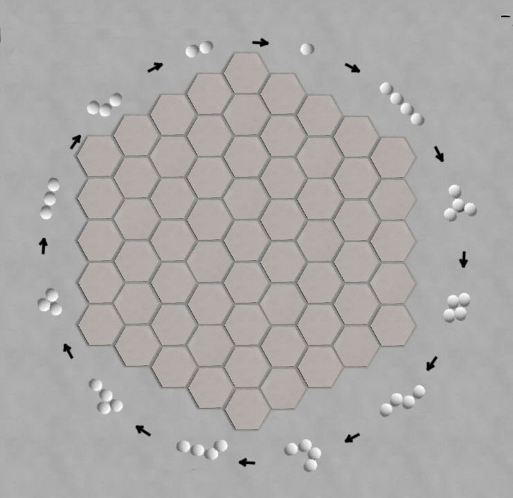

Blooms |
|
Bug |
| Register |
Get the application |
Circle of
Life
Circle of Life is a capturing game themed as a carnivorous ecosystem,
where each "critter" eats (captures) some other type of critter,
ultimately forming a complete circle. |
 |
| Circle of
Life rankings
at Boardspace |
Circle of Life
at BoardGameGeek |
| Circle or
Life win/loss
database |
Circle of Life game
archives |
|
|
Site Map |
Go to BoardSpace.net home page |